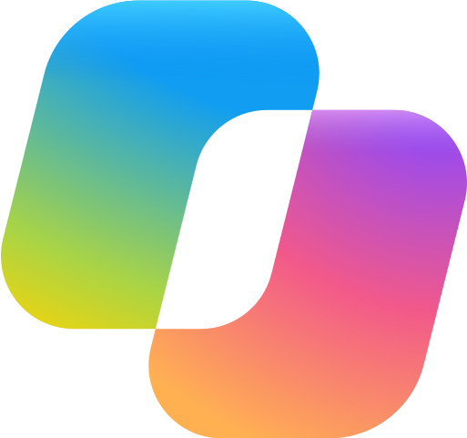

AI-strategi
Var AI och automation betalar sig snabbast hos er. Konkret, inte i teorin.
AI-agenter för support, prospektering och rapportering.
Vi börjar med ett arbetsflöde och en prototyp på er egen data.
EXEMPEL
Tre lösningar i daglig drift hos en organisation. Bolag, personer och siffror är påhittade, stegen är verkliga.
01 · LEADGENERERING
Rätt personer hos rätt bolag, researchade med källor, poängsatta efter öppna regler och med ett första utkast. Säljaren får underlag, inte en hög med namn.
Rätt roller hos matchande bolag, grupperade per bolag.
AI söker belägg på webben. Varje påstående har en källa, annars lämnas det tomt.
Fasta, läsbara regler för roll, senioritet och signaler. Ingen svart låda.
Personligt utkast och rätt ägare i ert CRM.
02 · FEEDBACK OCH ÄRENDEN
Synpunkter från Teams, e-post, chatt och enkäter sammanfattas, klassificeras och landar hos den som äger frågan. Oklara fall går till en människa.
Allt i kanalerna fångas upp.
Varje inlägg blir en rad att agera på.
Produktområde och typ, som bugg eller önskemål.
Rätt Product Owner får det i sin kanal.
03 · RAPPORTSAMMANSTÄLLNING
Inför veckomötet hämtas läget ur CRM, BI och Teams, skrivs ihop och avvikelser pekas ut. En sida att fatta beslut på.
Via API, på schema.
Ett underlag med källa på varje påstående.
Det som sticker ut lyfts överst.
Till Teams eller e-post innan mötet.
BÖRJA HÄR
Fast pris och omfattning bestäms före start. Ni tar ställning till fortsatt arbete efter utvärderingen.
TJÄNSTER
Var AI och automation betalar sig snabbast hos er. Konkret, inte i teorin.
Agenter som läser, förstår och agerar i era system.
Repetitiva flöden blir självkörande, från inkommande till avslutat.
Sammanställningar, beslutsunderlag och rapporter skapar sig själva.
VERKTYG OCH INTEGRATIONER
Saknas ert system i raden finns det oftast ett API att bygga mot.

Microsoft CopilotMETOD
Vi hittar flödena där automation ger störst effekt.
Arkitektur, integrationer och säkerhet som passar era system, inte tvärtom.
Avgränsad prototyp på er data, fast pris. Ni ser värdet innan ni bestämmer er.
Vi bygger klart och lämnar över en lösning ert team äger.
SKILLNADEN
Skriptade tester kontrollerar kända flöden. En AI-agent utforskar vidare i webbläsaren. Ni får en lösning som granskas, inte bara en demo som ser bra ut.
Varje ändring provas i en isolerad testmiljö innan den släpps vidare.
Riktiga anrop mot riktiga system, redan på ändringsnivå.
En AI-agent utforskar tjänsten i webbläsaren och rapporterar problem som skriptade tester kan missa.
Ni ser vad som körs och vad det gör, även i drift.
I PRAKTIKEN · SÅ TESTAS VARJE ÄNDRING INNAN DEN SLÄPPS
Följ en ändring från pull request till grind. Pulsen visar var koden är, texten förklarar steget.
PRINCIPER
Behörigheter, loggning och spårbarhet från början. Ni godkänner vilka data och tjänster som används.
Vi bygger ovanpå CRM, ärendesystem och e-post ni redan har. Inga nya verktyg.
Varje steg är synligt och granskbart. Ni kan ingripa när ni vill.
Ingen inlåsning. Komplett dokumentation, ert team driver vidare själva.
OM

Jag bygger AI-automationer i kod som tar bort manuellt arbete, bland annat exemplen ovan som används dagligen av en hel organisation. Mer än tio år av testautomation lärde mig att det som inte är testat går sönder, alltid vid fel tillfälle. Därför får varje automation jag bygger tester i leveransflödet innan den får köra skarpt.
LinkedIn →FAQ
Vi börjar med en avgränsad prototypfas på er egen data, med fast pris och tydlig leverans. Ni ser flödet fungera innan ni fattar större beslut.
Vi kommer överens om vilka data som får behandlas, var de behandlas och vilka tjänster som används, även externa AI-tjänster. Behörigheter, loggning och dataskydd planeras innan vi börjar.
De flesta system med API, till exempel CRM, ärendehantering, e-post och ekonomisystem. Saknas API hittar vi oftast en annan väg.
Bolag med återkommande manuellt arbete, oavsett bransch: säljteam som researchar leads en och en, support som sorterar ärenden för hand, ledningar som klipper ihop rapporter ur flera system.
Därför att det testas som riktig programvara innan det släpps: varje ändring körs upp som en levande tjänst och verifieras med riktiga anrop och en AI-agent i webbläsaren. Bakgrunden är mer än tio år av testautomation.
KONTAKT
Ett kort samtal räcker för att veta om det finns ett flöde värt att automatisera.
Boka ett samtal med Johan